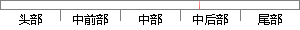

把样本带入刚选好的component中，判断是否属于这个类别，如果不属于则返回第一步。
片段位置图

相似结果|
相似片段 1：component中的一个(被选中的概率是％)，第二步把样本代入刚选好的component，判断是否属于这个类别，如果不属于则回到第一步aEM算法主要用于参数掰，∑的估计，EM。要求解的问题一般形式
相似片段 2：练好的77高斯混合模型测试样本的分类，具体做法为：第一步随机地提取个component中的一个（计算被选中的概率为π）；第二步将样本输入选择的，判断是否可以属于这个类别，如果条件结果不满足，不属于重新
相似片段 3：、∑。在模型训练好之后，就可以用来判断样本所属的分类，具体的判断步骤为：第一步以 πk的概率在 K 个要素中随机选取一个要素；第二步把样本代入刚选好的要素中，并判断是否属于这个类别，如果不属于则回到第一步继续
相似片段 4：判断一个点所属的分类，方法是：Stepl：随机选择K个component中的一个(被选中的概率是Ⅱk)；Step2：把样本代入刚选好的component，判断是否属于这个类别，如果不属于则回到Stepl
|
※ 片段修改建议 ※
近似词参考：- 判断：判定 果断
- 是否：是不是
- 类别：种别
- 如果：若是 假如 要是
系统自动生成语句： 把样本带入刚选好的component中，判定是不是属于这个种别，若是不属于则返回第一步。
注：本片段修改建议为系统自动生成，仅供参考。